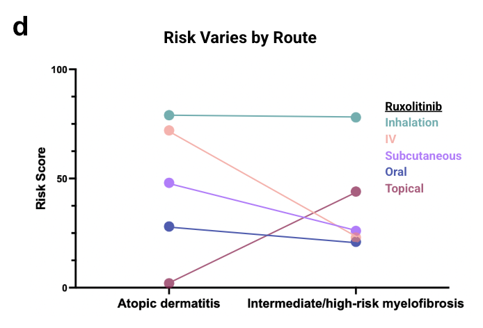
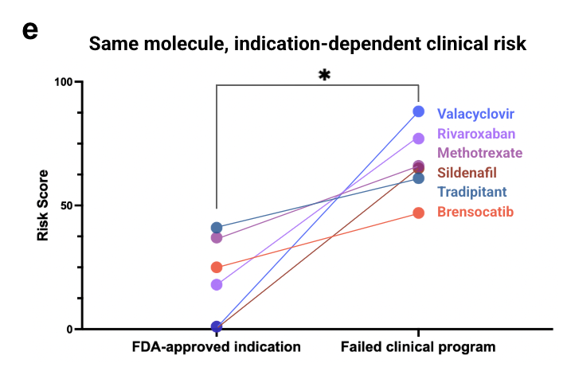

Clinical Risk Is Not a Property of a Molecule
Post 8 of 9 on SAISHO’s clinical-outcomes prediction model.
Every predictive model in drug discovery that I have worked on, including several I built, shares a hidden assumption: that you can score a molecule.
You feed in a structure, you get back a number. The number belongs to the structure. Change the structure, change the number.
That assumption is wrong for clinical outcomes, and this post is the experiment that demonstrates it. It is also, commercially, the most interesting result in the paper, because it converts a verdict into a map.
The Test
The claim from post 2 was that clinical viability emerges from the interaction between molecule, target, disease context, and how the drug is delivered. If that is true, then holding the molecule completely fixed and changing only its context should move the predicted risk.
If the score does not move, the system is scoring chemistry with extra steps.
So we held molecules fixed and varied two things: the delivery route, and the indication.
Ruxolitinib Through Five Routes

Ruxolitinib is a JAK1/JAK2 inhibitor, and it is the ideal test case because reality has already run the experiment. It is approved as a topical cream for atopic dermatitis and as an oral therapy for intermediate or high-risk myelofibrosis. Same active molecule, two routes, two diseases, both successful.
We evaluated it across five routes in both settings.
In localized atopic dermatitis: topical 2, oral 28, subcutaneous 48, intravenous 72, inhaled 78.
In systemic myelofibrosis the ordering reorganizes: oral 20, intravenous 22, subcutaneous 27, topical 43, inhaled 77.
Look at what topical does. It is the lowest-risk option in atopic dermatitis at 2 and jumps to 43 in myelofibrosis. That is the model saying something specific and correct: a cream cannot achieve the systemic target engagement that a bone marrow disease requires. It is not penalizing topical delivery. It is penalizing topical delivery for a systemic disease.
Meanwhile inhaled delivery stays high in both settings, 78 and 77, which is the right answer for different reasons in each case.
For both indications, SAISHO ranked the clinically established route as the lowest-risk option. Topical for atopic dermatitis, oral for myelofibrosis. Without being told which was which.
Six Molecules, Two Indications Each

The route experiment shows sensitivity. This one shows discrimination.
We took six small molecules, each of which has an FDA-approved indication and a separate indication where the clinical program did not succeed: valacyclovir, rivaroxaban, methotrexate, sildenafil, tradipitant, and brensocatib.
Identical molecule, identical target, identical chemistry. The only variable is the disease.
SAISHO assigned the higher risk score to the failed program in all six pairs. Median 21.5 for the approved indications versus 65.5 for the failed ones. Exact paired Wilcoxon, P = 0.031, which is the smallest P value available with six pairs.
The largest separation was valacyclovir: 1 for herpes zoster, 88 for early symptomatic Alzheimer's disease. In the VALAD randomized trial, valacyclovir failed to slow cognitive decline and was associated with greater cognitive worsening than placebo. An 87-point swing on an unchanged structure and an unchanged target, driven entirely by the disease hypothesis.
One detail matters for how much weight to put on this: four of the six failed outcomes were first publicly reported after the January 2025 model freeze. That is a small prospective element inside a retrospective analysis, and the systematic version of that test is post 9.
Why This Changes What the Tool Is For
If risk were a property of a molecule, a risk model would be a filter. You would run your library through it, keep the survivors, and move on.
Because risk is a property of the complete program, the model is a search space instead.
You can hold a molecule fixed and ask what indication minimizes its risk. You can hold an indication fixed and ask which route buys you the most margin. You can ask which of the six liabilities the board flagged are molecule-level (fixable by chemistry) and which are program-level (fixable only by repositioning), which is the distinction from post 6.
That turns clinical risk from a verdict into a navigable landscape. And navigating it costs an inference run rather than a clinical trial, which is the entire argument for doing it early.
For a shelved asset in particular, the question "was this molecule wrong, or was the indication wrong" is worth a great deal of money and is currently answered by intuition. Being able to map it systematically, before committing, is a different kind of tool from a filter.
What This Does Not Show
It does not show that a lower-scoring route or an alternative indication will actually succeed. It shows that the framework generates testable, context-specific hypotheses rather than treating risk as immutable. Those are very different claims and I want to be unambiguous about which one I am making.
The ruxolitinib result has a real-world anchor for two of its ten route-indication pairs. The other eight are plausible and unvalidated. Nobody has run inhaled ruxolitinib for myelofibrosis, and the score of 77 is a hypothesis, not a finding.
The six-molecule indication comparison is six pairs. P = 0.031 is the floor of what six paired observations can produce, and it should be read as consistent with the hypothesis rather than as strong independent confirmation.
All of this is small molecules. Extending to other modalities requires modality-specific evaluation capability and separate validation, and I would be skeptical of anyone claiming a small-molecule framework transfers to, say, a delivery-vehicle-dominated modality without being rebuilt for it. The underlying principle, decompose viability into specialized judgments and reconcile them at the program level, is not modality-specific. The implementation very much is.
Next week: the part that cannot be gamed by curation. Predictions archived before the outcomes existed.
More on the platform at saisho.ai.